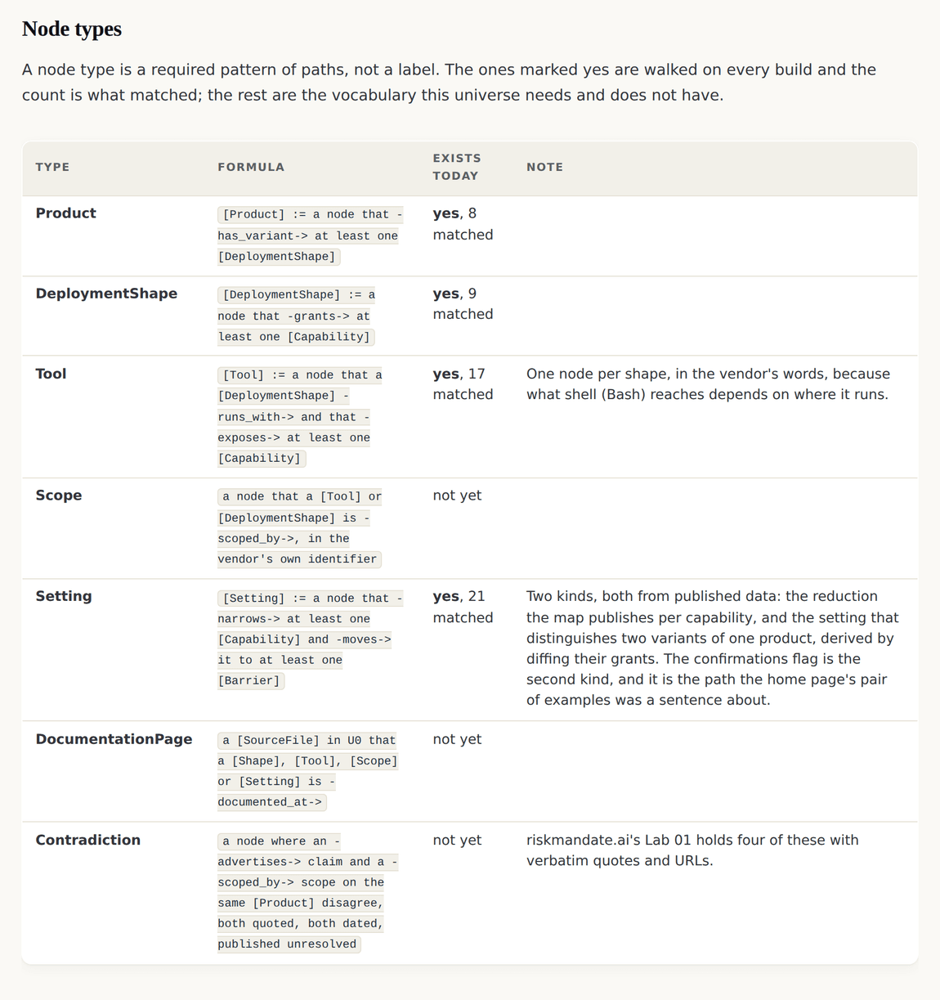
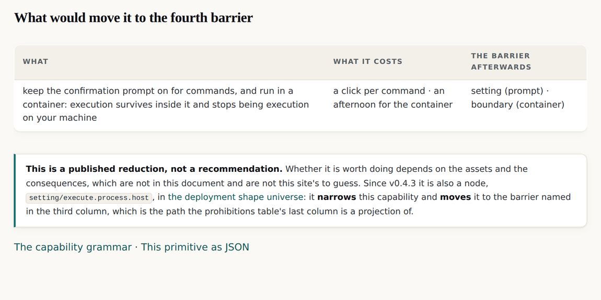

v0.4.3: The home page has argued about one setting since v0.1.0, and now the build walks it
A product, a tool and a setting became node types with formulas, derived from data the site already held. The setting that distinguishes confirmations on from confirmations off was found by diffing two grants, and whose material a capability reaches was declared without being guessed.
v0.4.3 tag, so it shows the site as it stood at that release and not as it stands today. Read on to v0.4.4, or back to v0.4.2.An argument that had been a sentence since the first release
The clearest demonstration this site has is a pair of example pages: the same coding agent, the same machine, the same account, with the confirmation prompt on in one and off in the other. The grant does not change. The mandate does not change. The delta does not change. One barrier moves.
For three releases that was a paragraph. A reader had to take it on trust that something in the data connected the two shapes, because nothing did: a shape carried its tools as strings and carried nothing at all about what distinguished one variant of a product from another.
Three node types, and nothing typed in
This release adds a product, a tool and a setting as node types with formulas the build walks. All three are derived from data the site already held.
| Type | Where it comes from | Matched |
|---|---|---|
Product | the two segments of a shape id that are not the variant, so two shapes with the same product are the same thing in a different setting | 8 |
Tool | the tools a profile already listed, in the vendor's own words, one node per shape because what shell (Bash) reaches depends on where it runs | 17 |
Setting | twenty from the reductions the capability map publishes per capability, and one from diffing the grants of two variants of one product | 21 |

The setting nobody wrote
The interesting node of the three is the last one. The setting that distinguishes confirmations on from confirmations off was not authored. The build takes the two variants of one product, diffs their grants, and whatever barrier moved between them is what the setting moves.
For this pair exactly one capability moves: execute.process.host sits at a setting in one variant and at nothing in the other. So the node carries one narrows edge to that capability and two moves edges, one to each barrier. The home page's paragraph is now a path with two nodes and two edges in it, walked on every build, and it would fail the build if it stopped being true.

Whose material, declared without being guessed
The other half of the release answers the first of three requests a consumer of this data published against this site. Reach answers how far a capability goes. It does not answer whose material it touches.
read.message.tenant says the agent can read a mailbox. It does not say the mailbox is full of other people's correspondence, and no setting any of the four vendors documents makes a mailbox anything else.
| Value | What it means |
|---|---|
own | the deployer's own material |
organisation | the deployer's organisation's material |
third_party | other people's material |
mixed | other people's material mixed with the deployer's, and no setting the vendor documents makes it otherwise |
A grant you hold over other people's material is not a grant you may pass on. That sentence is in the foundation document and it had nowhere to live in the data until this release.
The deployment shape universe · The capability grammar · v0.4.3's own release record